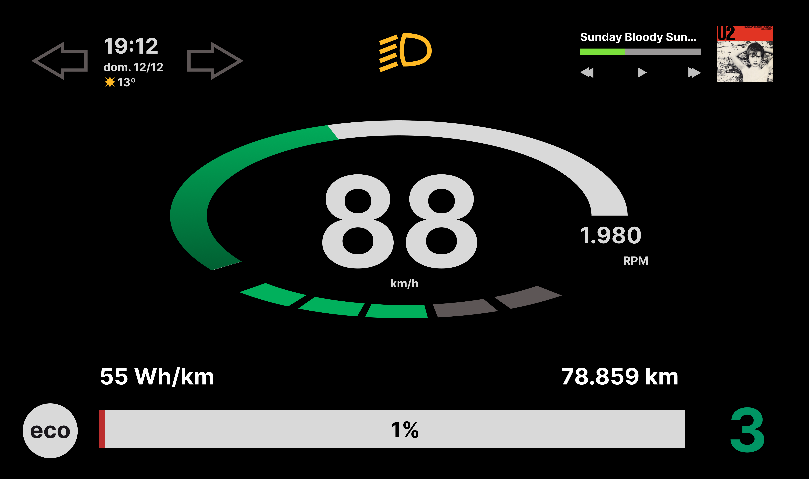
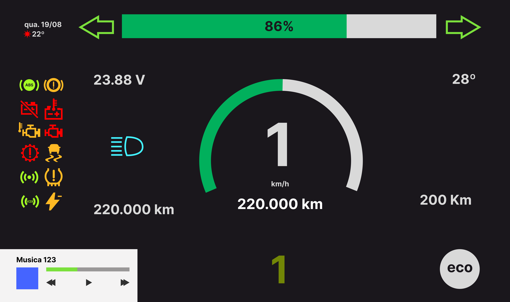
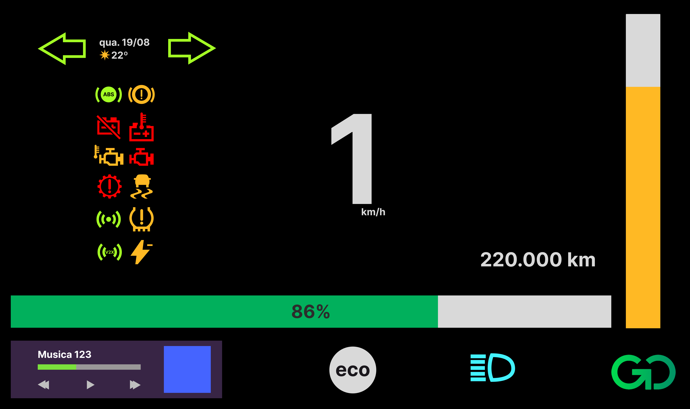
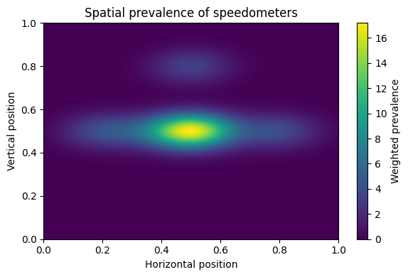
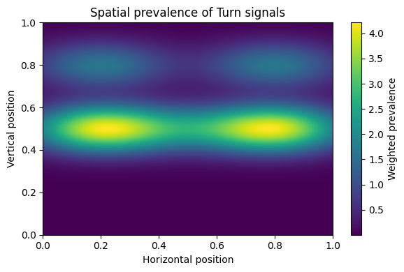
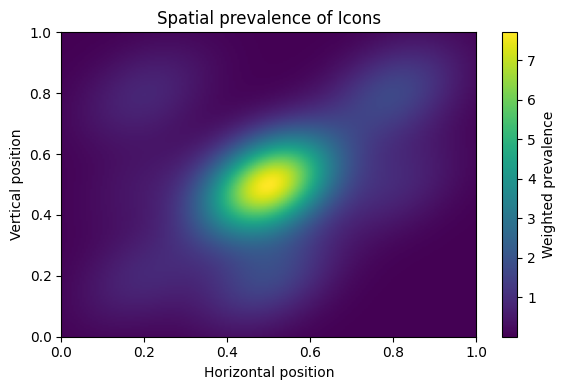

Dashboard digital para painel de motocicleta — projecto de investigação em HCI e ergonomia. Foco em hierarquia de informação crítica, legibilidade em condições de movimento e usabilidade contextual para uso com capacete e luvas.
"Quando o contexto é 120 km/h, cada milissegundo de leitura conta — a interface não pode pedir atenção que o condutor não tem."

O dashboard de motocicleta é um dos contextos de uso mais exigentes em HCI — o utilizador está em movimento a velocidade elevada, usa equipamento que limita a motricidade fina (luvas) e não pode desviar a atenção do ambiente de condução por mais de alguns segundos. O design tem de ser correcto à primeira leitura.
O projecto partiu de uma revisão de literatura em ergonomia cognitiva e interfaces de veículos, seguida de análise de dashboards existentes (analógicos e digitais). O foco foi identificar a hierarquia de informação crítica — o que o condutor precisa de saber imediatamente, o que pode ser consultado, e o que nunca deve distrair.


A hierarquia de informação foi estruturada em três níveis: crítico, operacional e contextual. Leando em conta definições feitas aparir do estudo semiótico de esquisos de estudantes.
A tipografia foi escolhida por legibilidade em condições adversas — fontes com espaçamento generoso, sem serifas, com abertura de contadores ampla. Os ícones usam formas distintas (não apenas cor) para serem reconhecíveis com visão periférica ou em daltonismo.



— Motorbike Dashboard · HCI · Ergonomia · Embedded UI · Mestrado UTAD